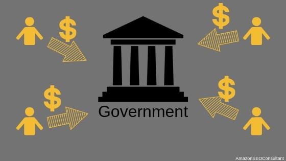

Citizen to Government
El comercio electrónico C2G (Citizen to Government ) relaciona a los consumidores con el Gobierno, facilitando el intercambio telemático de transacciones entre los ciudadanos y las administraciones públicas. Algunos de los servicios más habituales son: · Información. Participación del ciudadano. Suscripción para la notificación telemática. Pago de tasas e impuestos. Sugerencias y reclamaciones. Entrada y/o salida a través de registro. Diversos servicios, como empleo, sanidad o educación. Las aplicaciones C2G incluyen en su mayoría pago de impuestos, publicaciones de documentos oficiales, etc. A pesar de que no podemos definir las transacciones entre los clientes o ciudadanos con las instituciones gubernamentales como comercio electrónico, podemos ver suficientes aplicaciones C2G en el marco de transacciones que son realizadas más efectivamente y más eficientemente con el uso de sistemas de tecnología de comercio electrónico. Este tipo de operación o transacción es basicamente de interactividad entre consumidores y los gobiernos donde le consumidor está informado a través de la internet acerca de los servicios que brindan los gobiernos en las diferentes actividades administrativas, públicas y judiciales, postales y sectores económicos